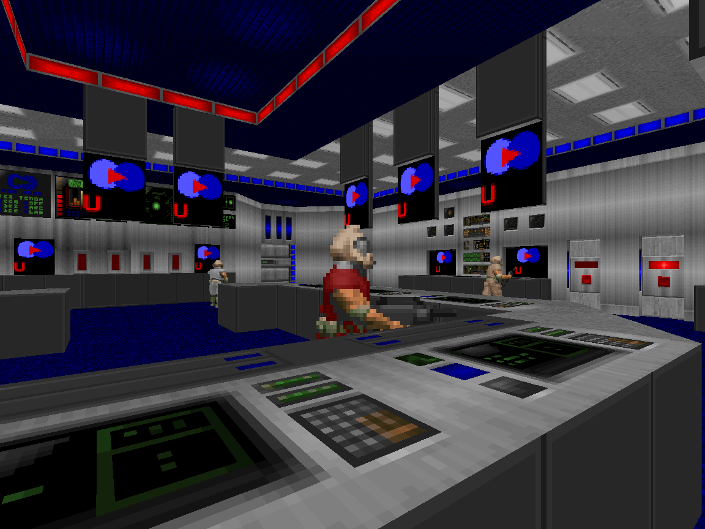
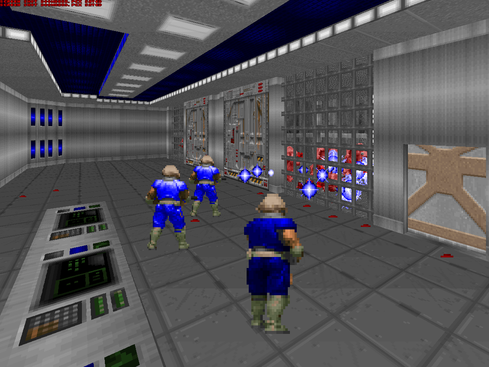
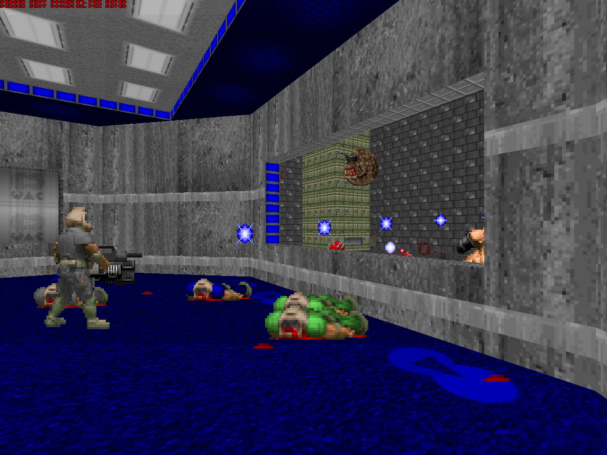
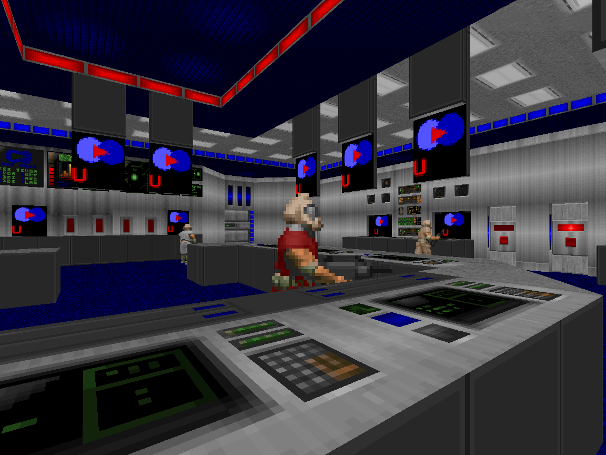
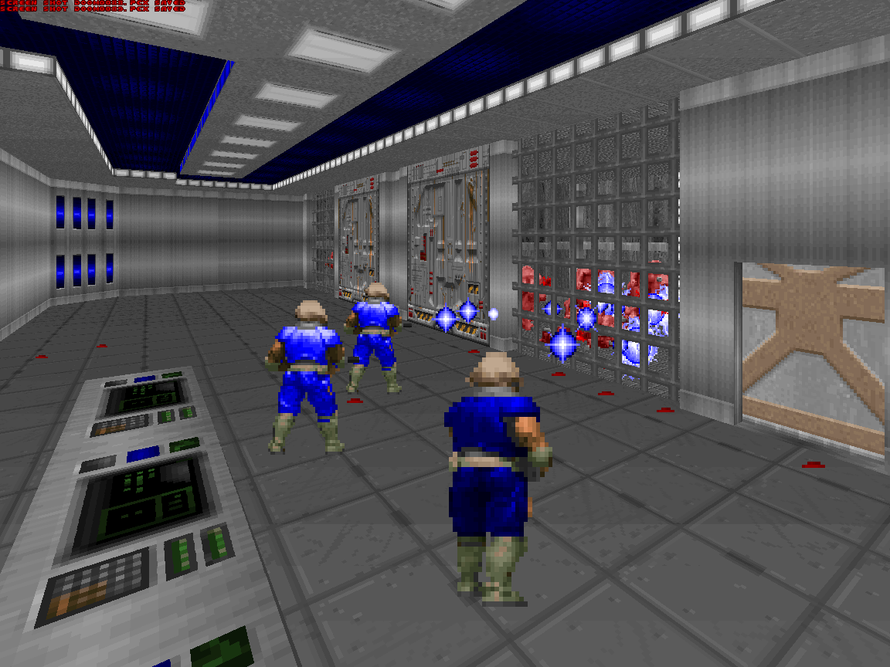
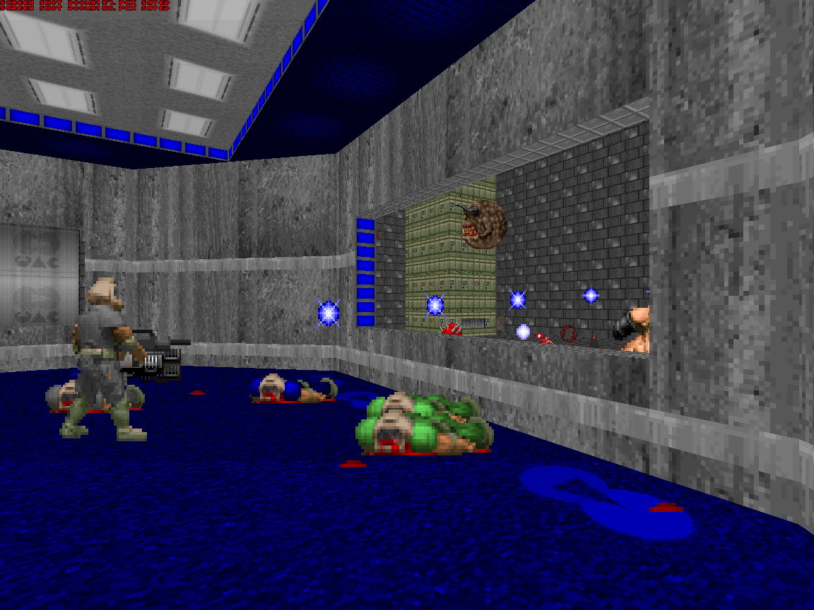

Story & Origins
Battle Arena is a UAC black-ops facility and as a passion project built over years of late-night Doom co-op.
In-Universe: UAC Battle Research Center
The Battle Arena is a secret Union Aerospace Corporation complex on Earth. Its purpose: capture and study creatures discovered via ancient teleporters on Mars' moons then throw elite Marines at them until someone learns something or dies trying.
The facility is split between a biological research wing, packed with caged monsters and the Arena itself, where live-fire tests pit Marines against demonic hordes. Safety is “a top priority”, at least according to the welcome briefing you get before stepping into a building full of teleporters, experimental power systems, and a room filled to the brim with monsters. What could possibly go wrong?
Real-World: Two High-School Doom Nerds
Battle Arena started life around 2002-2004 when Alex “Anelf3” Gumpel and Bryan “CrankyHippo” Burnett tried to recreate their favorite Doom II memory: sprinting past a Cyberdemon that slowly crept closer to the spawn every time they died.
The original prototype was just a giant pit full of Cyberdemons and a central bunker. From there the level grew organically: control room, exterior courtyard, brig, armory, med bay, maintenance shafts, and a spawn zone where players choose how to enter the map.


 




